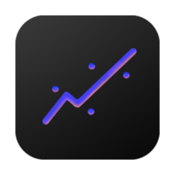
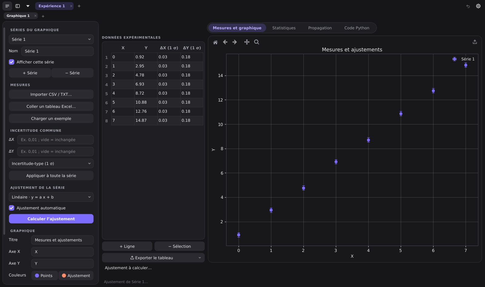

Regline
Données et incertitudes pour les labos de physique
Saisis ou colle tes mesures, ajuste une droite ou ta propre formule, propage les incertitudes et exporte des graphiques et des tableaux prêts pour ton rapport, y compris en LaTeX. Gratuit.

Pourquoi Regline ?
Installation
- Télécharge Regline pour Windows et ouvre le fichier.
- Si Windows affiche « Windows a protégé votre ordinateur », clique sur Informations complémentaires, puis Exécuter quand même.
- Suis l'assistant. Regline apparaît ensuite dans le menu Démarrer.
Ce message apparaît parce que Regline est un logiciel indépendant non signé. Pas besoin de droits administrateur.
- Télécharge la version de ton Mac. Pour la connaître : menu Pomme → À propos de ce Mac. « Puce Apple M… » : Apple Silicon. « Processeur Intel » : Intel.
- Ouvre le fichier
.dmget glisse Regline dans le dossier Applications. - Au premier lancement, macOS bloque l'app : ferme le message, ouvre Réglages Système → Confidentialité et sécurité, et clique sur Ouvrir quand même tout en bas.
Si macOS indique que l'app est « endommagée », ouvre le Terminal et tape :
xattr -dr com.apple.quarantine /Applications/Regline.app
- Télécharge l'archive Linux et extrais-la :
tar -xzf Regline-*-Linux-x86_64.tar.gz - Lance
Regline/Regline.
Sur Ubuntu ou Debian, si rien ne s'ouvre : sudo apt install libxcb-cursor0
Qui est derrière Regline ?
Je m'appelle Leandro, je suis étudiant en bachelor de physique à l'Université de Genève. Après une ou deux expériences au labo, j'ai eu l'idée de développer Regline, avec l'aide de l'intelligence artificielle, pour faciliter la vie des étudiantes et étudiants en sciences pendant leurs travaux pratiques.
Une idée de fonctionnalité, un bug, une question ? Écris-moi à leandro.cstrm@proton.me. J'espère que Regline te sera utile !
Soutenir le projet
Regline est et restera gratuit. Si l'app t'aide et que tu veux soutenir son développement, un petit don fait toujours plaisir, mais ce n'est jamais obligatoire.
♥ Soutenir Regline